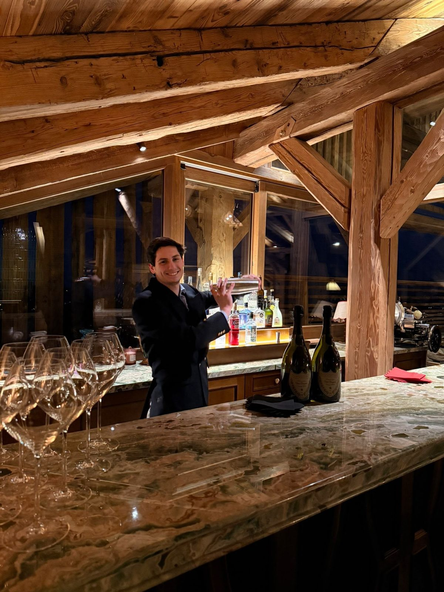
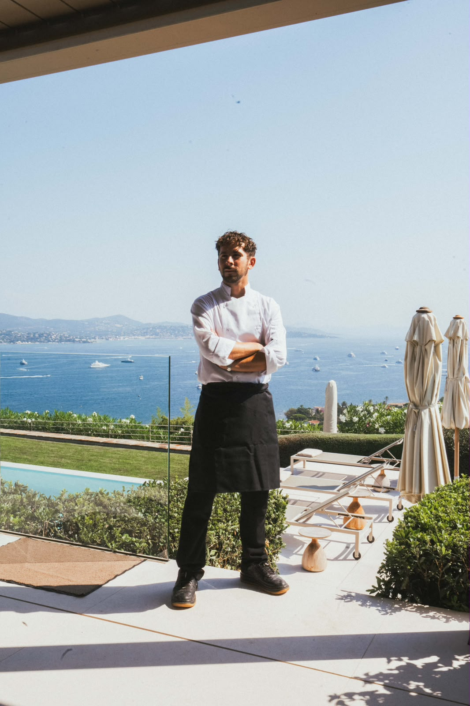
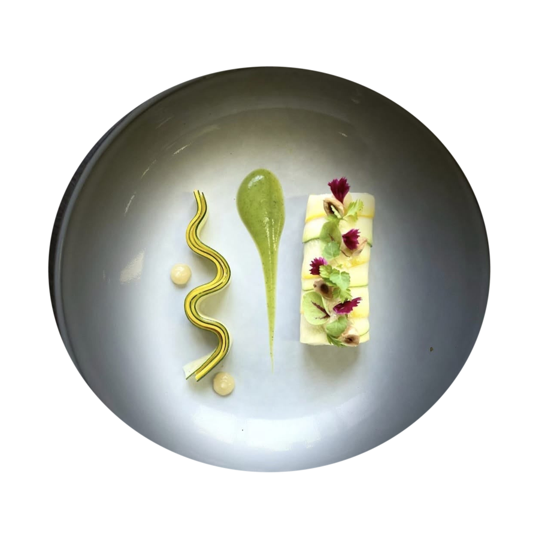
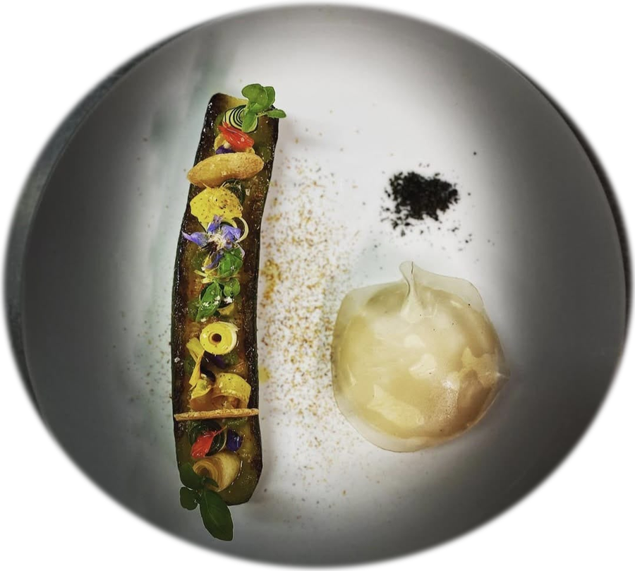
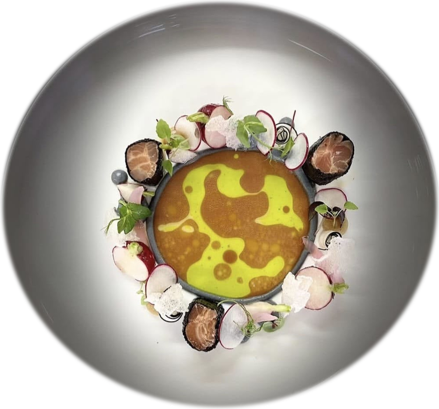
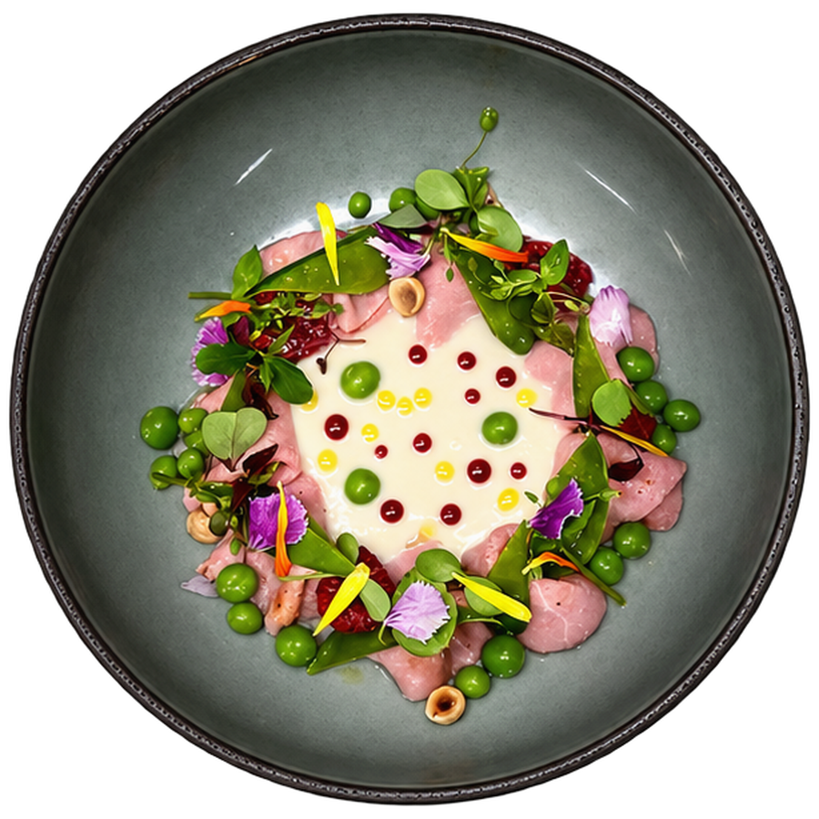

Le Service
Le geste juste, jusqu'à la table
Découpe, flambage, décantation, dressage à table — le service qui accompagne chaque plat, à l'assiette comme en partage. Voici quelques gestes qui font toute la différence dans un chalet privé.

Chef privé & Sommelier
WhatsApp +33 6 52 89 47 80
Méribel · Courchevel · Megève Genève · Verbier · Gstaad

« L'expérience des grands restaurants au service d'un chalet privé. »
Un duo qui orchestre chaque soirée : cuisine gastronomique à votre goût, service en salle sans faille, vins et cocktails adaptés à vos envies. Gastronomie à l'assiette ou service family style, aucun détail n'est laissé au hasard.




L'Assiette
Gastronomie à l'assiette : produits de saison, dressage minimaliste, geste précis. Voici un aperçu de ce que Barthélémy composera pour vous et vos amis.
Voir la galerie complète →Le Partage
Barthélémy met le même soin dans un dîner en sharing que dans un menu à l'assiette : produits choisis, cuisson maîtrisée, générosité sans rien perdre en précision. Voici un aperçu de ce qu'il compose pour rassembler vos convives.
Le Service
Découpe, flambage, décantation, dressage à table — le service qui accompagne chaque plat, à l'assiette comme en partage. Voici quelques gestes qui font toute la différence dans un chalet privé.
Découvrir
Barthélémy, chef privé, et Quentin, majordome & sommelier WSET 3 — leurs parcours en 2 et 3 étoiles Michelin.
Découvrir le duo →Grands crus classés, vieux millésimes et vignerons indépendants — une sélection pensée pour chaque accord.
Découvrir la cave →Dîners privés, service en salle, accords mets-vins et cocktails sur mesure pour votre chalet.
Voir les prestations →Un aperçu des dressages, vins et moments signature de nos soirées privées.
Voir la galerie →Contactez-nous directement sur WhatsApp ou via le formulaire de contact.
Écrire sur WhatsApp Voir les coordonnées